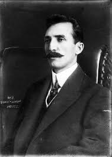

Fecha de nacimiento: 8 de septiembre de 1869, Tenosique de Pino Suárez
Asesinado: 22 de febrero de 1913, Ciudad de México
José María Pino Suárez fue un político, abogado, poeta, periodista y revolucionario mexicano que sirvió como el séptimo y último vicepresidente de México de 1911 hasta su asesinato en 1913, durante los eventos de la denominada decena trágica.